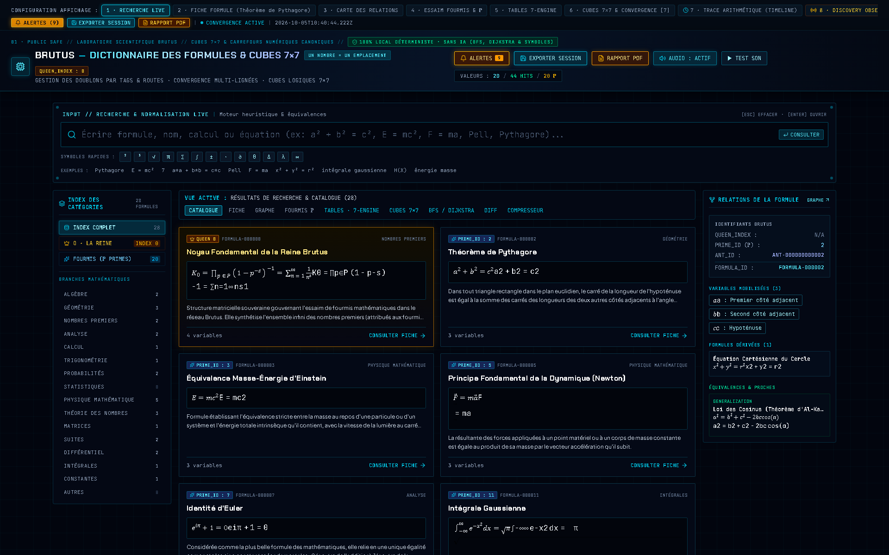

ANTMUX · BRUTOTABLEUR · VITRINE PUBLIQUE
Brutotableur
Vue publique figée et auditable du dictionnaire de formules et cubes 7×7. Cette page ne permet aucune action sur le logiciel.
PUBLIC · VERROUILLÉ
LECTURE SEULE
SOURCE BRUTOTABLEUR · 3579b57
